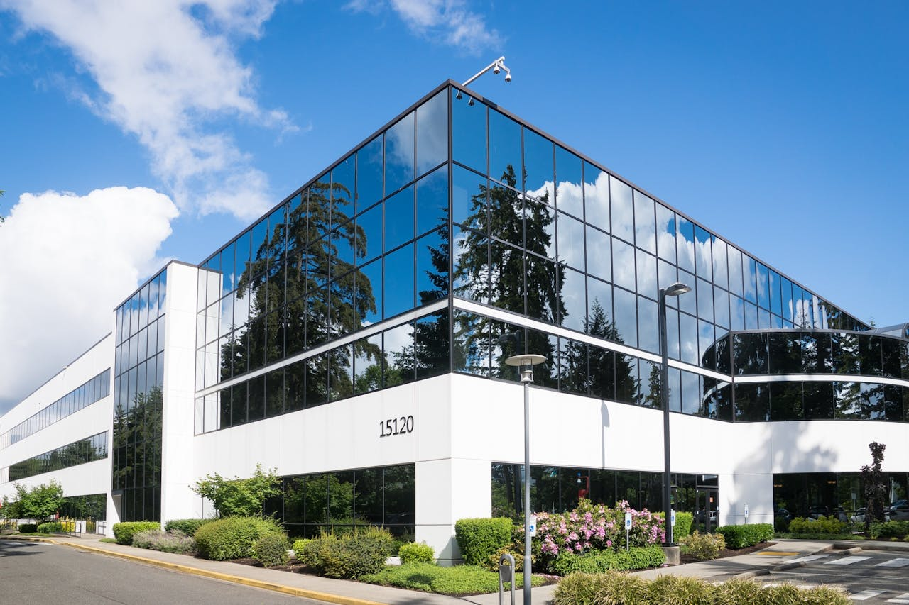
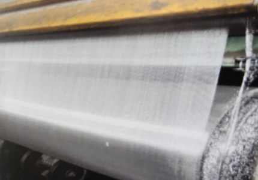
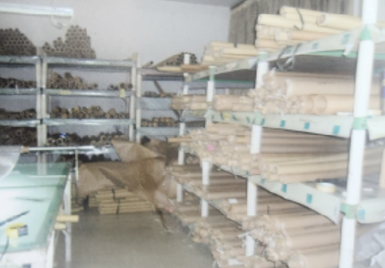
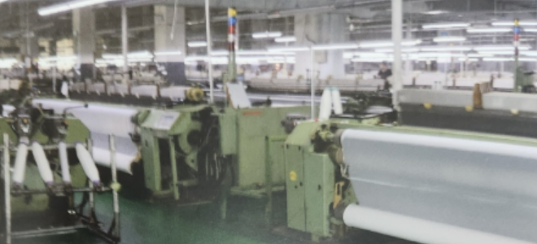

최고의 품질과 기술력
스텐망 전문 글로벌 M&C 산업
회사소개
Global M&C는 filter mesh, screen printing mesh, sus304, 316L, 스텐망사, 블랙mesh, 돗자리망, 구리망, dutch weave wire mesh 등 전반적인 산업용 mesh 제품을 수출입 및 유통하는 전문 기업입니다.
특히 PE mesh, nylon mesh는 high quality 기술을 가지고 있으며, 스위스 Sulzer Ruti 자동 제직기를 사용해 mesh를 짜고 있기 때문에 고객의 high quality needs에 적합한 회사입니다.
최첨단 시설, 글로벌 네트워크, 신뢰할 수 있는 기술, 그리고 풍부한 지식을 바탕으로 한 생산 시스템을 통해 고객 신뢰에 지속적으로 대응하고 있습니다. 가격과 품질에서 고객의 니즈에 최선을 다하도록 하겠습니다.

제품소개
Filter mesh, printing mesh, black mesh, nylon mesh, 돗자리망 등 다양한 소재와 규격의 철망을 공급합니다.

산업용 특수 Mesh

고품질 필터/프린팅 Mesh

고객 맞춤형 솔루션
문의하기
제품 및 기술 관련하여 궁금한 점이 있으시면 언제든지 편하게 연락주십시오.
Email: awake9281@naver.com
연락처: 010-8944-1913
Fax: 031-8094-1931
주소: 경기도 평택시 고덕중앙로 322, 912호